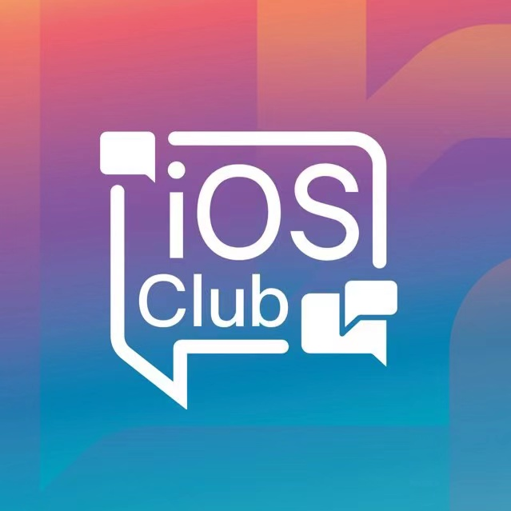

My name is Xin Tan (21 y/o), currently a final-year undergraduate at
Jilin University,
and will be pursuing master degree of Computer Science in North America this year after September.
🤳 Skill Sets 🔧
- Languages: Cantonese (Native), Mandarin (Native), English (TOEFL 108, IELTS 7.5), French (Elementary).
- Computer Languages: R, C, Python, MATLAB, Java, (SQL, HTML + CSS, LaTeX)
- Tools/IDE: RStudio, Pycharm, Spyder, Visual Studio, Eclipse, MySQL, SPSS, AutoCAD, Origin, ArcGIS
Final Year Project: Ecosystem Risk Assessment with Fuzzy Cognitive Map
You can scroll down in this section.👇
-
[2023/05/12] 5th ad: Master of Science in Computer Science offer with 10,000💲 scholarship from Brandeis University! 🇺🇸
-
[2023/04/07] 4th ad: Master in Information Systems offer from Northeastern University! 🇺🇸
-
[2023/03/23] iPhone MDE internship offer from Apple!
-
[2023/03/14] 3rd ad: Master of Science in Professional Computer Science offer from Simon Fraser University! 🇨🇦
-
[2023/02/15] 2nd ad: MS in Computer Science offer from George Washington University! 🇺🇸
-
[2023/02/03] 1st ad: MS in Computer Science offer from NC State University! 🇺🇸
-
[2022/11/25] First internship offer from SHUWEI (Nanshan, Shenzhen) during winter vacation.
-
[2020/11/26] .
-
[2022/10/01] Finished my 3-month research at Dal, flying back to Guangzhou and today is my birthday!!! 21 years old now.
-
[2022/07/01] 16+ hours flight from Canton to Halifax, Happy Canada Day!!!
Scroll down for more information 👇
|
School of Computing Science
Master of Professional Computer Science | Sep. 2023 - Jun. 2025
- Includes a 4-8 months co-op in 2024 Summer, and a $15,000 Mitacs Globalink Graduate Fellowship
- Main courses: Big Data Lab, Machine Learning, Distributed and Cloud Systems, Secure Software Design, Computer Vision, etc.
|
|
|
College of Computer Science and Technology
B.S. in Computer Science and Technology | Sep. 2021 - Jul. 2023
B.Eng. in Environment Engineering | Sep. 2019 - Jul. 2023
- Main courses: Advanced Language Programming, Operating System, Java Object-Oriented Programming, Computer Networks, Data Structure, Principle of Computer Organization, Web Design, Database Management, Computer Graphics, etc.
|

|
|
Regent’s Park College
Exchange Student, Oxford Prospect Programme | Jan.2020 – Feb.2020
- Lectures include: Statistical Machine Learning, Modelling Neurons, The Language of Logic, Fluid Dynamics, etc.
- Best Presentation Award (4/30)
|

|
|
High School Diploma, Science | Sep. 2016 - Jul. 2019
- Activities and Societies: Member of School Literature Society & Calligraphy Society.
|

|

|
A Semi-automatic Digital Measurement Device for Groundwater Level
Ying Lu, Yang Xu, Xin Tan, Chengyan Wen, Zhiyu Jiao
Patent ID: ZL 2021 1 0875594. 0
Filed 07/30/2021 - Issued 09/13/2022
|
Scroll down for more information 👇
|
(Suzhou, China) Apr.2023 – Aug.2023
- Applied deep learning methods to optimize the manufacturing process, from data collecting, model training to product lines deployment (iOS app & Mac mini).
- Developed a Tableau dashboard that enables real-time monitoring of production capacity of various performance metrics.
- Managed the maintenance and updates of the team's internal website, including new pages design and tool downloads.
- Worked closely with various venders, conducting frequent site visits to factories in different cities.
|
|
Data Intern | SHUWEI
(Shenzhen, China) Dec.2022 – Feb.2023
SHUWEI is a series-C funding IT company focuses on using AI & Big Data technologies to develop digital products.
- Worked with Python/SQL to process urban data sets covering transportation, GDP, consumption capacity, etc.
- Conducted statistical analysis on DataArts Studio cloud platform that helps with location selection of chain stores.
|

|
|
(Halifax, Canada) Jul.2022–Oct.2022
Project: Data Analytics for Clean Water Technologies
- The goal of this interdisciplinary project is to work with existing platforms developed in the lab using ShinyApp and RStudio
to manage significant amounts of data developed through the various water projects. The student is responsible for developing an expanded knowledge
base in software development and working collaboratively with PhD students in data analytics.
|

|
|
(Raleigh, USA) Jan.2022–Feb.2022
Project: Netflix Prize Movie Ratings Prediction
- Machine Learning and Data mining for real world applications.
Netflix is all about connecting people to the movies they love.
With the anonymous rating data provided, the project use Model-based Collaborative Filtering as baseline
and try to improve it by adopting GNN based methods.
|

|
|
(Changchun, China) Jan.2022–Feb.2022
Project: Intelligence-control Software Development for Sandstone-type Uranium Mining
- This is an interdisciplinary research project that uses well logging data collected by mining company to develop LSTM model for lithology identification
and ore grade prediction in deep formations.
|
|
Scroll down for more information 👇
- - Mitacs Globalink Scholarship, Chinese Scholarship Council (CSC) | 2022
- - Honorable Mention (21%), Mathematical Contest in Modeling (MCM) | May.2022
- - Outstanding Winner (CNY10,000 Prize Money), The National Undergraduate Hydraulic Innovation Design Competition | Aug.2021
- - First Prize, The Provincial Undergraduate Physics Experiment Competition | May.2021
- - Provincial Third Prize,The Contemporary Undergraduate Mathematical Contest in Modeling | Nov.2020
Scroll down for more information 👇
Student Ambassador | Mitacs
(Canada) Feb.2023 – Present
Student Ambassador for 2023 Mitacs Globalink Program
|

|
Student Member | JLU iOS Club
(Changchun) Sep.2021 – Feb.2022
Participated in weekly Xcode training workshop about mini games development with Swift.
|

|
Student Member | JLU Study Abroad Association
(Changchun) Jul.2020 – Jul.2021
Cooperated with the Office of Global Engagement of Jilin University to compile and publish the
" Feiyue Handbook " every year - a comprehensive guide that shares information of master & PhD
programs oversea.
Held monthly lectures on studying abroad.
|
|
|
(Guangzhou) Registered Volunteer
Traditional Chinese Characters Translator
|
|
Student Volunteer during Covid - 19 | Guangzhou Library
(Changchun) Apr.2022 – Jun.2022
Helped with the management and distribution of food, water and other basic living goods in the student apartment
when the whole campus was on a complete lockdown.
|
|
Miscellaneous ⚽
-
Friends 🤺🤺🤺(Ordered by Alphabets)
Hongbo ZHU |
Raman Jha |
Rusali Saha |
Sutirtha Roy |
Ye YUAN |
Zhendong LI |
Zhuowen ZHEN
-
Vistor/Student/Worker: 🇨🇳 🇺🇸 🇨🇦 🇸🇬 🇬🇧 🇭🇰 🇲🇴...
-
Sports: Tandem Skydiving (13500ft in Montreal, Canada), Skateboarding 🛹(2 years), Snowboarding 🏂(1 year),
Swimming 🏊(The 3rd place holder in JLU Freshman Cup of women’s 100m backstroke), Surfing 🏄(Beginner), Kayaking 🚣, Cycling 🚵, Hiking 🚶.
-
NIM Games: Pearls Before Swine (Try this one!)
Last update: Apr. 7th, 2023